Simulation Setup and Management¶
General Principles¶
At the heart of ISOLDE’s capabilities is the ability to quickly create an interactive simulation from an arbitrary selection of residues. In order to ensure the interface and graphical rendering remain smooth regardless of the size of the construct, once created most simulation tasks are pushed away to a separate C++ thread, communicating with ISOLDE in a semi-asynchronous manner. To be more specific, each call to
OpenMM_Thread_Handler.step(n)
spawns a C++ thread tasked with running n simulation steps, during which time an
arbitrary number of graphics updates may occur. The thread will terminate after
the desired number of steps, and the simulation will not move forward further
until the next call to step(). This prevents the simulation from running
out of control no matter what happens in the GUI.
Simulation Management Classes¶
SimParams¶
- class
chimerax.isolde.openmm.SimParams(**kw)¶Container for all the parameters needed to initialise a simulation. All parameters in the
_default_paramsdict become properties when the class is instantiated. Parameters with units are stored assimtk.Quantityinstances, and can be retrieved or changed in the following ways:params.restraint_max_force Quantity(value=25000.0, unit=kilojoule/(nanometer*mole)) # Assumes the new value is in the stored unit system params.restraint_max_force = 20000 # Automatically converts the value into the stored unit system from simtk.unit import kilojoule_per_mole, angstrom params.restraint_max_force = 2000 * kilojoule_per_mole/angstrom # Raises an error if you attempt to set a value with incompatible units params.restraint_max_force = 2000 * kilojoule_per_mole TypeError: Unit "kilojoule/mole" is not compatible with Unit "kilojoule/(nanometer*mole)".
Sim_Construct¶
- class
chimerax.isolde.openmm.Sim_Construct(model, mobile_atoms, fixed_atoms, excluded_atoms=None)¶Container class defining the ChimeraX atoms (all, mobile and fixed) in a simulation. Also responsible for storing the visualisation state of these atoms prior to simulation startup, and reverting it when done.
__init__(model, mobile_atoms, fixed_atoms, excluded_atoms=None)¶Prepare the construct. The atoms in each array will be sorted in the same order as
model.residues.atoms, primarily because OpenMM requires atoms to be grouped by residue.
- Args:
- model:
The
chimerax.AtomicStructurecontaining the atoms in this simulation
- mobile_atoms:
A
chimerax.Atomsinstance defining the atoms that are to be mobile
- fixed_atoms:
A
chimerax.Atomsinstance defining the atoms that are to be fixed
- excluded_atoms:
A
chimerax.Atomsinstance defining any atoms to be excluded from the simulation. This may be set to None.NOTE: the simulation will fail if mobile_atoms and fixed_atoms do not combine to form a set containing only complete residues. Also note that OpenMM does not allow a fixed atom to be rigidly bonded to a mobile one (in practice this means any fixed heavy atom must have its hydrogens also fixed).
- property
all_atoms¶A
chimerax.Atomsinstance containing all atoms in the simulation, sorted in the same order asmodel.residues.atoms.
- property
all_residues¶A
chimerax.Residuesinstance containing all residues in the simulation, sorted in the same order asmodel.residues
- property
fixed_atoms¶A
chimerax.Atomsinstance containing the fixed selection, sorted in the same order asmodel.residues.atoms.
- property
mobile_atoms¶A
chimerax.Atomsinstance containing the mobile selection, sorted in the same order asmodel.residues.atoms.
- property
mobile_heavy_atoms¶A
chimerax.Atomsinstance containing the non-hydrogen mobile atoms, sorted in the same order asmodel.residues.atoms
- property
mobile_residues¶A
chimerax.Residuesinstance containing the mobile residues.
revert_visualisation()¶Return the model visualisation to the way it was before the simulation began.
store_original_visualisation()¶Store the current visualisation state of the model, so it can be reverted once the simulation is done.
Sim_Manager¶
- class
chimerax.isolde.openmm.Sim_Manager(isolde, model, selected_atoms, isolde_params, sim_params, excluded_residues=None, expansion_mode='extend')¶Responsible for creating the
Sim_Handlerand managing the high-level control of the simulation. Handles all the necessary callbacks for automatically updating restraints in the simulation whenever their parameters change.
__init__(isolde, model, selected_atoms, isolde_params, sim_params, excluded_residues=None, expansion_mode='extend')¶
- Prepares a simulation according to the following workflow:
Expands an initial selection of atoms to complete residues according to the rules defined by expansion_mode
Finds a shell of residues around this selection to act as the fixed context
Restricts the live validation managers to focus only on the mobile selection (creating the managers as necessary)
Finds/creates all restraint managers for the model
Expands the fixed atom selection to include any non-mobile residues containing atoms participating in distance restraints with mobile atoms
Creates the
Sim_ConstructobjectPrepares the molecule visualisation for simulation (masking maps to the mobile selection, hiding atoms not in the simulation, etc.)
Prepares the MDFF managers (NOTE: this must be done after the preceding step, which ensures that each
chimerax.Volumehas a region covering the mobile selection with sufficient padding)Prepares all necessary callbacks to update the simulation when the parameters of restraints, mdff atom proxies etc. change.
Creates the
Sim_HandlerAdds all existing restraints and MDFF atom proxies to the simulation.
- Args:
- isolde:
the current isolde session
- model:
the
chimerax.AtomicStructurefrom which the simulation atoms are drawn
- selected_atoms:
- a
chimerax.Atomsinstance defining the initialselection around which the simulation will be built.
- isolde_params:
a
IsoldeParamsinstance
- sim_params:
a
SimParamsinstance
- excluded_residues:
optional
chimerax.Residuesdefining residues that should be excluded from the simulation (typically because there is no MD parameterisation for them). These will remain visible in the model and be considered for map calculations, but will not have any impact whatsoever on simulations. Any atom(s) directly bonded to an excluded residue will be fixed in space along with their attendant hydrogen atoms.
- expansion_mode:
string defining how the initial selection will be expanded. For allowable options, see
expand_mobile_selection()
checkpoint()¶A
CheckPointis a snapshot of the current simulation state (including the state of all restraints) that can be returned to at any time, discarding any changes since the checkpoint was saved.
Sim_Managerautomatically saves a checkpoint when the simulation is started. This method allows the saving of an intermediate state - particularly useful before experimenting on an ambiguous region of your map. Each call tocheckpoint()overwrites the previously-saved one. When ending a simulation you may choose to keep the final coordinates or revert to either of the last saved checkpoint or the start-of-simulation checkpoint.
expand_mobile_selection(core_atoms, expansion_mode)¶Expand the set of atoms defined by core_atoms according to a set of rules. After the initial rule-based expansion, the selection will be further expanded to encompass all residues coming within
IsoldeParams.soft_shell_cutoff_distanceAngstroms of the expanded selection. The selection returned will always consist of whole residues.
- Args:
- core_atoms:
a
chimerax.Atomsinstance
- expansion_mode:
‘extend’: each contiguous set of residues is extended backwards and forwards along the chain by the number of residues set by
IsoldeParams.num_selection_padding_residuesother modes will be added later
prepare_sim_visualisation()¶Set up a simulation-friendly visualisation of the construct.
revert_to_checkpoint()¶Reverts to the last saved checkpoint. If no checkpoint has been manually saved, reverts to the start of the simulation.
- property
sim_running¶Returns True if the simulation is running, otherwise False. Read only.
start_sim()¶Start the simulation running. Should only be run once.
stop_sim(revert=None)¶Stop the simulation and optionally revert to a previous state.
- Args:
- revert:
None: keep the current coordinates
‘checkpoint’: revert to the last saved checkpoint
‘start’: revert to the state the model was in prior to starting the simulation
toggle_pause()¶Pause/resume the simulation.
Sim_Handler¶
- class
chimerax.isolde.openmm.Sim_Handler(session, sim_params, sim_construct, forcefield_mgr)¶Responsible for creating a
openmm.Simulation, instantiating and populating the custom force objects, managing the creation and calling ofOpenMM_Thread_Handler, and generally handling all the OpenMM side of simulation management.
__init__(session, sim_params, sim_construct, forcefield_mgr)¶Prepares the simulation topology parameters and construct, and initialises the necessary Force objects to handle restraints. Most restraint forces must be populated using e.g.
add_dihedral_restraints()before initialising the context and beginning the simulation. While it is possible to add new restraints after the simulation has started, in general this is only advisable in situations where it is impossible or impractical to define all possible restraints in advance (since each addition requires a costly reinitialisation of the simulation context). For example, the performance penalty to having all possible position restraints pre-defined (and mostly disabled) is minimal, but it is not practical to pre-define distance restraints between all possible atom pairs.
- Args:
- session:
the ChimeraX session object
- sim_params:
a
SimParamsinstance
- sim_construct:
a
Sim_Constructinstance
- forcefield_mgr:
a class that behaves as a {name:
OpenMM::ForceField} dict.
add_adaptive_distance_restraint(restraint)¶Add a single adaptive distance restraint to the simulation. Sets
sim_indexfor the restraint so it knows its place in the simulation. Automatically callscontext_reinit_needed()
- Args:
- restraint:
a
AdaptiveDistanceRestraintinstance
add_adaptive_distance_restraints(restraints)¶Add a set of adaptive distance restraints to the simulation. Sets
sim_indexfor each restraint so it knows its place in the simulation. Automatically callscontext_reinit_needed().
- Args:
- restraints:
a
AdaptiveDistanceRestraintsinstance
add_amber_cmap_torsions(ramas)¶Add CMAP correction terms for AMBER force field.
- Args:
- ramas:
a
Ramasinstance covering all mobile residues
add_dihedral_restraint(restraint)¶Singular form of
add_dihedral_restraints().
- Args:
- restraint:
A
ProperDihedralRestraintinstance, or any other Python restraint class based onDihedral_Restraint
add_dihedral_restraints(restraints)¶Add a set of dihedral restraints to the simulation. This sets the
sim_indexfor each restraint so it knows its own place in the simulation for later updating purposes. Automatically callscontext_reinit_needed().
- Args:
- restraints:
Any python restraints
chimerax.Collectioninstance based onDihedral_Restraint. At present this is limited toProperDihedralRestraints, but expect others (e.g. chirals) to be added with time.
add_distance_restraint(restraint)¶Add a single distance restraint to the simulation. Sets
sim_indexfor the restraint so it knows its place in the simulation. Automatically callscontext_reinit_needed()
- Args:
- restraint:
a
DistanceRestraintinstance
add_distance_restraints(restraints)¶Add a set of distance restraints to the simulation. Sets
sim_indexfor each restraint so it knows its place in the simulation. Automatically callscontext_reinit_needed()
- Args:
- restraints:
a
DistanceRestraintsinstance
add_mdff_atom(mdff_atom, volume)¶Add a singl MDFF atom proxy to the force associated with the given volume. Automatically calls
context_reinit_needed()
- Args:
- mdff_atom:
a
MDFFAtominstance
- volume:
the
chimerax.Volumeinstance that was used to create the target force.
add_mdff_atoms(mdff_atoms, volume)¶Add a set of MDFF atom proxies to the force associated with the given volume. Automatically calls
context_reinit_needed()
- Args:
- mdff_atoms:
a
MDFFAtomsinstance
- volume:
the
chimerax.Volumeinstance that was used to create the target force.
add_position_restraint(restraint)¶Add a single position restraint to the simulation. Sets
sim_indexfor the restraint so it knows its place in the simulation. Automatically callscontext_reinit_needed()
- Args:
- restraint:
a
PositionRestraintinstance
add_position_restraints(restraints)¶Add a set of position restraints to the simulation. Sets
sim_indexfor each restraint so it knows its place in the simulation. Automatically callscontext_reinit_needed()
- Args:
- restraints:
a
PositionRestraintsinstance
add_tuggable(tuggable)¶Add a single tuggable atom proxy to the simulation. Sets
sim_indexso the tuggable knows its place in the simulation. Automatically callscontext_reinit_needed()
- Args:
- tuggable:
a
TuggableAtominstance
add_tuggables(tuggables)¶Add a set of tuggable atom proxies to the simulation. Sets
sim_indexfor each tuggable so it knows its place in the simulation. Automatically callscontext_reinit_needed()
- Args:
- tuggables:
a
TuggableAtomsinstance
context_reinit_needed()¶If the number of particles, bonds etc. in any force object changes, the context must be reinitialised. Be aware that while reinitialisation happens in the thread (so GUI performance is not affected), it will pause the simulation for (typically) a few seconds, so should be saved for situations where there is no other option. If the simulation has not yet started this call will be ignored; otherwise the context will be reinitialised on the next iteration of the main loop.
create_openmm_topology(atoms, residue_templates)¶Generate a simulation topology from a set of atoms.
- Args:
- atoms:
a
chimerax.Atomsinstance. Residues must be complete, and the atoms in each residue must be contiguous in the array.
- residue_templates:
A {residue_index: residue_type} dict for residues whose topology is otherwise ambiguous, where residue_type is the name of the residue in the forcefield definition. OpenMM requires a {
openmm.Residue: residue_type} dict, so we need to do the conversion here.
define_forcefield(forcefield_file_list)¶Create a
openmm.ForceFieldobject from a set of OpenMM ffXML files.
- Args:
- forcefield_file_list:
An iterable of file names.
force_update_needed()¶This must be called after any changes to force objects to ensure the changes are pushed to the simulation context. This happens automatically when changes are made through the
Sim_ManagerAPI.
initialize_adaptive_distance_restraints_force()¶Just initialise the force. Unlike ISOLDE’s other custom forces, this does not take a max_force argument. Given that the forces applied by this method should be quite weak under almost all circumstances, this should not be a problem.
initialize_dihedral_restraint_force()¶Just initialise the restraint force. Must be called before the simulation starts, and before any restraints are added.
initialize_distance_restraints_force(max_force)¶Just initialise the force, and set its limiting magnitude. Must be called before the simulation starts, and before any restraints are added.
- Args:
- max_force:
the maximum allowable force, in 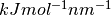
initialize_implicit_solvent(params)¶Add a Generalised Born Implicit Solvent (GBIS) formulation.
- Args:
- params:
a
SimParamsinstance
initialize_mdff_force(volume)¶Prepare an MDFF map from a
chimerax.Volumeinstance. The Volume instance is expected to have a singleregionapplied that is big enough to cover the expected range of motion of the MDFF atoms that will be coupled to it (and for performance/memory reasons, ideally not too much bigger). Must be called before the simulation is started, and before any MDFF atoms are added.
- Args:
- volume:
a
chimerax.Volumeinstance
initialize_mdff_forces(volumes)¶Add a
LinearInterpMapForcefor eachVolumeinstance.
- Args:
- volumes:
an iterable of
Volumeinstances
initialize_position_restraints_force(max_force)¶Just initialise the force, and set its limiting magnitude. Must be called before the simulation starts, and before any restraints are added.
- Args:
- max_force:
the maximum allowable force, in
initialize_restraint_forces(amber_cmap=True, tugging=True, position_restraints=True, distance_restraints=True, dihedral_restraints=True, adaptive_distance_restraints=True)¶Create the selected Force objects, and add them to the System. No restraints are added at this stage - these should be added using (e.g.) add_dihedral_restraints().
- Args:
- amber_cmap:
use CMAP corrections to the AMBER forcefield as per http://pubs.acs.org/doi/pdf/10.1021/acs.jctc.5b00662. Should only be used with the combination of AMBER and implicit solvent.
- tugging:
Add interactive tugging force (implemented as a
TopOutRestraintForce)
- position_restraints:
Add position restraints force (implemented as a
TopOutRestraintForce)
- distance_restraints:
Add distance restraints force (implemented as a
TopOutBondForce)
- dihedral_restraints:
Add dihedral restraints force (implemented as a :py:class:FlatBottomTorsionRestraintForce)
initialize_tugging_force(max_force)¶Just initialise the force, and set its limiting magnitude. Must be called before the simulation starts, and before any restraints are added.
- Args:
- max_force:
the maximum allowable force, in
- property
minimize¶Force the simulation to continue minimizing indefinitely.
- property
pause¶Get/set the current pause state.
push_coords_to_sim(coords=None)¶Change the atomic coordinates within the simulation.
- Args:
- coords:
an array of coordinates in Angstroms, or None. If None, the current coordinates of the simulation construct in ChimeraX will be used.
release_fixed_atoms(atoms)¶Make the desired fixed atoms mobile again. NOTE: a fixed atom can not be bonded to a mobile atom via a rigid bond. In most cases this means that you cannot fix a hydrogen without fixing the heavy atom that it’s bonded to, and any fixed heavy atom must have all its hydrogens fixed. While atoms may in theory be fixed and un-fixed during a simulation, ISOLDE wasn’t built with this in mind and it requires a costly re-initialisation of the simulation context. In most cases it’s best to simply use strong position restraints wherever you want to interactively “fix” atoms.
- Args:
- atoms:
a
chimerax.Atomsinstance
set_fixed_atoms(fixed_atoms)¶Fix the desired atoms rigidly in space. NOTE: a fixed atom can not be bonded to a mobile atom via a rigid bond. In most cases this means that you cannot fix a hydrogen without fixing the heavy atom that it’s bonded to, and any fixed heavy atom must have all its hydrogens fixed. While atoms may in theory be fixed and un-fixed during a simulation, ISOLDE wasn’t built with this in mind and it requires a costly re-initialisation of the simulation context. In most cases it’s best to simply use strong position restraints wherever you want to interactively “fix” atoms.
- Args:
- fixed_atoms:
a
chimerax.Atomsinstance
set_mdff_global_k(volume, k)¶Set the global coupling constant for the MDFF force associated with the given volume. NOTE: this will trigger a reinitialisation of the simulation context, so use sparingly!
- Args:
- volume:
the
chimerax.Volumeinstance that was used to create the target force
- k:
the new coupling constant, in
set_mdff_scale_factor(volume, scale_factor)¶Adjust the dimensions of the mdff map in the simulation. This is typically used to optimize the scaling in the course of a single simulation. The final scale should be applied back to the original map, so that in future simulations the scale factor is 1.0.
- Args:
- volume:
the
chimerax.Volumeinstance that was used to create the target force
- scale_factor:
the new scale factor (dimensionless). Changing the scale factor by more than 1-2% in a single go is dangerous!
- property
sim_running¶Is the simulation curently running (i.e. started and not destroyed)?
- property
smoothing¶If true, the displayed coordinates will be a smoothed average of the last set of equilibration steps. Note that for large values of sim_steps_per_gui_update this can lead to distorted geometry.
- property
smoothing_alpha¶ISOLDE uses an exponential smoothing scheme, where
smoothing_alphadefines the contribution of each new set of coordinates to the moving average. Values are limited to the range (0.01..1), where 1 indicates no smoothing and 0.01 provides extremely strong smoothing. Values outside of this range will be automatically clamped. Internally, coordinates are added to the moving average every 10 steps or the number of steps to the next graphics update, whichever is smaller.Note that smoothing only affects the visualisation of the simulation, not the simulation itself. Applying energy minimisation or pausing the simulation fetches the latest instantaneous coordinates and restarts the smoothing.
start_sim()¶Start the main simulation loop. Automatically runs a minimisation, then switches to equilibration once minimisation is converged.
stop(reason=None)¶Stop the simulation. This will destroy the
OpenMM_Thread_Handlerobject, rendering the Python class unusable.
- property
temperature¶Get/set the simulation temperature in Kelvin.
- property
thread_handler¶Returns the
OpenMM_Thread_Handlerobject.
toggle_pause()¶Pause the simulation if currently running, or resume if paused
- property
triggers¶A
chimerax.TriggerSetallowing callbacks to be fired on key events. Seetriggers.trigger_names()for a list of available triggers.
update_adaptive_distance_restraint(restraint)¶Update the simulation to reflect the current parameters of the given restraint.
- Args:
- restraint:
a
DistanceRestraintinstance
update_adaptive_distance_restraints(restraints)¶Update the simulation to reflect the current parameters of the given restraints.
- Args:
- restraints:
a
AdaptiveDistanceRestraintsinstance
update_dihedral_restraint(restraint)¶Update the simulation to match the parameters (target angles, cutoffs, spring constants and enabled states) of the given restraint.
- Args:
- restraint:
A
ProperDihedralRestraintinstance. If the restraint is not part of the current simulation it will be ignored.
update_dihedral_restraints(restraints)¶Update the simulation to match the parameters (target angles, cutoffs, spring constants and enabled states) of the given restraints.
- Args:
- restraints:
A
ProperDihedralRestraintsinstance. Any restraints that are not part of the current simulation will be ignored.
update_distance_restraint(restraint)¶Update the simulation to reflect the current parameters (target distance, spring constant, enabled/disabled state) of the given restraint.
- Args:
- restraint:
a
DistanceRestraintinstance
update_distance_restraints(restraints)¶Update the simulation to reflect the current parameters (target distances, spring constants, enabled/disabled states) of the given restraints.
- Args:
- restraints:
a
DistanceRestraintsinstance
update_mdff_atom(mdff_atom, volume)¶Update the simulation to reflect the new parameters (individual coupling constants, enabled/disabled states) for the given MDFF atom proxy.
- Args:
- mdff_atom:
a
MDFFAtominstance
- volume:
the
chimerax.Volumeinstance that was used to create the target force.
update_mdff_atoms(mdff_atoms, volume)¶Update the simulation to reflect the new parameters (individual coupling constants, enabled/disabled states) for the given MDFF atom proxies.
- Args:
- mdff_atoms:
a
MDFFAtomsinstance
- volume:
the
chimerax.Volumeinstance that was used to create the target force.
update_position_restraint(restraint)¶Update the simulation to reflect the current parameters (target position, spring constant, enabled/disabled state) of the given restraint.
- Args:
- restraint:
a
PositionRestraintinstance
update_position_restraints(restraints)¶Update the simulation to reflect the current parameters (target positions, spring constants, enabled/disabled states) of the given restraints.
- Args:
- restraints:
a
PositionRestraintsinstance
update_tuggable(tuggable)¶Update the simulation to reflect the current parameters (target positions, spring constants, enabled/disabled states) of the given tuggable.
- Args:
- tuggable:
a
TuggableAtominstance
update_tuggables(tuggables)¶Update the simulation to reflect the current parameters (target positions, spring constants, enabled/disabled states) of the given tuggables.
- Args:
- tuggables:
a
TuggableAtomsinstance

OpenMM_Thread_Handler¶
- class
chimerax.isolde.openmm.OpenMM_Thread_Handler(context, params, c_pointer=None)¶A lightweight wrapper class for a
openmm.Context, which pushes time-consuming tasks off to a C++ thread so that Python performance is not interrupted. Each call tostep()orminimize()will create a short-lived thread to run the desired number of steps or a round of minimization, respectively. Where necessary (e.g. where new restraints are added to the simulation), the context may be reinitialised withreinitialize_context_and_keep_state(). The status of the thread can be checked withthread_finished, while the initial and final coordinates can be retrieved withlast_coordsandcoordsrespectively. Within the thread, the simulation is checked for excessive velocities every 10 steps. If instability (overly fast-moving atoms) is detected, the thread will terminate early andunstablewill be set to True. In such cases it is advisable to run one or more minimization rounds. When minimization converges to within tolerance, unstable will be reset to False.Use with care! While nothing prevents you from using the standard single- thread OpenMM API alongside this one, it is up to you to ensure that no threads are running before making any calls that affect the simulation. Additionally, the
OpenMM_Thread_Handlerobject must be destroyed before theopenmm.Contextit is attached to.
__init__(context, params, c_pointer=None)¶Initialise the thread handler.
- Args:
- context:
a
openmm.Contextinstance
- property
clashing¶True if any atom is experiencing an extreme force after energy minimisation.
- property
coords¶Returns the coordinates of the atoms after the most recent thread completes. Can also be set, to push edited coordinates back to the simulation.
- property
cpp_pointer¶Value that can be passed to C++ layer to be used as pointer (Python int)
- property
deleted¶Has the C++ side been deleted?
finalize_thread()¶Wrap up and join the existing thread. Note that if the thread has not finished, Python and GUI will hang until it has.
- property
last_coords¶Returns the coordinates of the atoms as they were at the start of the most recent thread. Switching between these and the final coords can be useful for diagnosing instability.
- property
min_thread_period¶Throttle the simulation to a minimum time period per loop (in ms). Useful when graphics performance needs to be prioritised over simulation performance. The default value is 1.0, which in almost all situations means the simulation will not be throttled.
minimize(tolerance=None, max_iterations=None)¶Run an energy minimization on the coordinates. If the minimisation converges to within tolerance, unstable will be set to False. Don’t forget to run
reinitialize_velocities()before continuing equilibration!
- Args:
- tolerance:
Convergence tolerance, in kJ/mol/atom.
- max_iterations:
Maximum number of iterations to run for before returning coordinates. NOTE: minimisation runs best if this number is kept large (at least a few hundred).
- property
natoms¶Number of atoms in the simulation.
reinitialize_context_and_keep_state()¶Reinitialize the Context, keeping the current positions and velocities. A reinitialization is typically only required when the number of bonds/particles in a Force object changes.
reinitialize_velocities()¶Set the atomic velocities to random values consistent with the current temperature. Recommended after any energy minimisation.
- property
smoothing¶If true, the displayed coordinates will be a smoothed average of the last set of equilibration steps. Note that for large values of sim_steps_per_gui_update this can lead to distorted geometry.
- property
smoothing_alpha¶ISOLDE uses an exponential smoothing scheme, where
smoothing_alphadefines the contribution of each new set of coordinates to the moving average. Values are limited to the range (0.01..1), where 1 indicates no smoothing and 0.01 provides extremely strong smoothing. Values outside of this range will be automatically clamped. Internally, coordinates are added to the moving average every 10 steps or the number of steps to the next graphics update, whichever is smaller.Note that smoothing only affects the visualisation of the simulation, not the simulation itself. Applying energy minimisation or pausing the simulation fetches the latest instantaneous coordinates and restarts the smoothing.
step(steps)¶Advance the simulation integrator by the desired number of steps.
- Args:
- steps:
an integer value
thread_finished()¶Has the current thread finished its task?
unstable()¶Returns true if any atoms in the simulation are moving too fast.
- property
unstable_atoms¶Returns a Boolean mask indicating which atoms are currently moving too fast.
Custom Forces¶
The actual custom OpenMM force classes used to implement MDFF and the various interactive restraints are listed below.
MDFF Potentials¶
- class
chimerax.isolde.openmm.custom_forces.CubicInterpMapForce(data, xyz_to_ijk_transform, suffix, units='angstroms')¶Converts a map of (i,j,k) data and a (x,y,z)->(i,j,k) transformation matrix to a potential energy field, with tricubic interpolation of values.
__init__(data, xyz_to_ijk_transform, suffix, units='angstroms')¶For a given atom at (x,y,z), the map potential will be defined as:
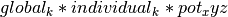
where pot_xyz is calculated by linear interpolation from the (i,j,k) map grid after applying xyz_to_ijk_transform.
- Args:
- data:
The map data as a 3D (i,j,k) NumPy array in C-style order
- xyz_to_ijk_transform:
A NumPy 3x4 float array defining the transformation matrix mapping (x,y,z) coordinates to (i,j,k)
- suffix:
In OpenMM, global parameters are global to the entire context, not just to the force. To provide a global parameter unique to this instance, the suffix is appended to the base name of the parameter. Should be a unique string.
- units:
The units in which the transformation matrix is defined. Either ‘angstroms’ or ‘nanometers’
- class
chimerax.isolde.openmm.custom_forces.CubicInterpMapForce_Low_Memory(data, xyz_to_ijk_transform, suffix, units='angstroms')¶The Continuous3DFunction pre-calculates the 64 coefficients per voxel necessary to quickly interpolate anywhere in the volume. This makes it extremely fast, but the coefficients are stored on the GPU as a single 1D array. In both OpenCL and CUDA, the size of a single array is limited to (signed) INTMAX = 2**31-1 bytes - allowing a maximum of just over 8M voxels. Beyond that, we need to fall back to the slower but more memory-efficient approach of recalculating the interpolation coefficients as needed.
__init__(data, xyz_to_ijk_transform, suffix, units='angstroms')¶For a given atom at (x,y,z), the map potential will be defined as:
where pot_xyz is calculated by tricubic interpolation from the (i,j,k) map grid after applying xyz_to_ijk_transform.
- Args:
- data:
The map data as a 3D (i,j,k) NumPy array in C-style order
- xyz_to_ijk_transform:
A NumPy 3x4 float array defining the transformation matrix mapping (x,y,z) coordinates to (i,j,k)
- suffix:
In OpenMM, global parameters are global to the entire context, not just to the force. To provide a global parameter unique to this instance, the suffix is appended to the base name of the parameter. Should be a unique string.
- units:
The units in which the transformation matrix is defined. Either ‘angstroms’ or ‘nanometers’
- class
chimerax.isolde.openmm.custom_forces.LinearInterpMapForce(data, xyz_to_ijk_transform, suffix, units='angstroms')¶NOTE: This class is deprecated, since there is almost no situation in which it is superior to either
CubicInterpMapForceorCubicInterpMapForce_Low_Memory.Converts a map of (i,j,k) data and a (x,y,z)->(i,j,k) transformation matrix to a potential energy field, with trilinear interpolation of values.
__init__(data, xyz_to_ijk_transform, suffix, units='angstroms')¶For a given atom at (x,y,z), the map potential will be defined as:
where pot_xyz is calculated by linear interpolation from the (i,j,k) map grid after applying xyz_to_ijk_transform.
- Args:
- data:
The map data as a 3D (i,j,k) NumPy array in C-style order
- xyz_to_ijk_transform:
A NumPy 3x4 float array defining the transformation matrix mapping (x,y,z) coordinates to (i,j,k)
- suffix:
In OpenMM, global parameters are global to the entire context, not just to the force. To provide a global parameter unique to this instance, the suffix is appended to the base name of the parameter. Should be a unique string.
- units:
The units in which the transformation matrix is defined. Either ‘angstroms’ or ‘nanometers’
Distance Restraints¶
- class
chimerax.isolde.openmm.custom_forces.AdaptiveDistanceRestraintForce¶A
openmm.CustomBondForcesubclass using the generalised adaptive loss function described by Jonathan Barron (https://arxiv.org/pdf/1701.03077.pdf).There are many situations in which collections of distance restraints may be approximate, or may contain some subset of restraints that are simply incorrect. A simple example is a distance restraint network created based on a reference model of your protein (e.g. a non-crystallographic symmetry copy or an independent experimental model of the same protein or close homologue). In this case the majority of restraints are likely to be correct, but any bulk conformational change between reference model and target will lead to some subset being wildly incorrect. In such cases it is advantageous to use an energy function which flattens out (that is, yields low-to-zero net force) not only at the target distance, but also once the distance deviates sufficiently from the target. In other words, restraints that are close to satisfied will be enforced, but restraints that are incompatible with the data will gracefully release.
Various loss functions meeting these criteria have been proposed and used in the past, each with its own specific characteristics. The function applied here is a generalisation of the Cauchy/Lorentzian, Geman-McClure, Welsch/Leclerc, generalised Charbonnier, Charbonnier/pseudo-Huber/L1-L2 and L2 loss functions, using a single “robustness” parameter to tune the rate of fall-off of restraint force with distance. This has been further adapted to optionally allow for an arbitrary amount of “lee-way” - that is, a range in which no bias is applied - either side of the target distance. The complete functional form is:
where
csets the width of the energy well and the distance at which the function switches from quadratic.
adjusts the depth of the well (that is, the absolute magnitude of the applied force). Within the central “well” of the function, 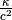 is equivalent to the spring constant in a standard harmonic restraint.
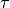 sets the tolerance around the target distance. If 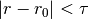 no restraining force will be applied.
is the master parameter setting the “robustness” of the restraint. For all values of
max_forceimposed on ISOLDE’s other custom forces, use this with care to avoid instability). Values larger than 2 are inadvisable. A value of 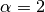 yields a standard harmonic (quadratic) restraint. When 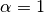, the restraining force transitions from harmonic to essentially constant (i.e. linear) between 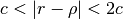. When 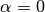, the force at large distances is proportional to 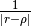. For increasing negative values ofAll parameters are settable at the individual restraint level.
__init__(self, energy) → CustomBondForce¶__init__(self, other) -> CustomBondForce
Create a CustomBondForce.
- energystring
an algebraic expression giving the interaction energy between two bonded particles as a function of r, the distance between them
add_bonds(atom_indices, enableds, kappas, cs, targets, tolerances, alphas)¶Add a set of bonds to the simulation, using a fast C++ function. Fastest if all parameters are supplied as NumPy arrays.
Args:
- atom_indices:
a 2-tuple of integer arrays giving the indices of the bonded atoms in the simulation construct
- enableds:
a Boolean array defining which restraints are to be active
- kappas:
a float array of energy scaling constants in 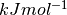. For a given restraint, is equivalent to a harmonic spring constant when the distance is close to the target.
- cs:
a float array setting the “width” of the energy well for each restraint in nanometres. A restraint behaves like a normal harmonic restraint when the current distance is less than
cfrom the target distance.
- targets:
a float array of target distances in nanometres
- tolerances:
a float array in nanometres. When 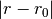 is less than the tolerance, no force will be applied.
- alphas:
a float array of terms setting the “steepness” of each restraint outside of the central well. Values less than one cause the applied force to fall off with increasing distance.
update_target(index, enabled=None, kappa=None, c=None, target=None, tolerance=None, alpha=None)¶Update the parameters for an existing restraint in the simulation. Mostly superseded by
update_targets().Args:
- index:
the index of this restraint in the OpenMM force object
- enabled:
Boolean flag defining whether the restraint is to be enabled. None = keep current value.
- kappa:
Energy scaling constant (as a
simtk.Quantityor in units of ). When the distance is close to the target, is equivalent to a harmonic spring constant. None = keep current value.
- c:
A distance (in nanometres) defining the width of the central “well” of the energy function. None = keep current value.
- target:
the new target distance (as a
simtk.Quantityor in nanometres). None = keep current value.
- tolerance:
Distance (in nanometres) around the target distance below which no biasing force will be applied. None = keep current value.
- alpha:
Dimensionless value dictating how quickly the energy grows or levels out for large deviations from the target distance. Values less than one cause the applied force to fall off with increasing distance. None = keep current value.
update_targets(indices, enableds, kappas, cs, targets, tolerances, alphas)¶Update a set of targets all at once using fast C++ code. Fastest if the arguments are provided as Numpy arrays, but any iterable will work.
Args:
- indices:
the indices of the restraints in the OpenMM force object
- enableds:
a Boolean array defining which restraints are to be active
- kappas:
a float array of energy scaling constants in . For a given restraint, is equivalent to a harmonic spring constant when the distance is close to the target.
- cs:
a float array setting the “width” of the energy well for each restraint in nanometres. A restraint behaves like a normal harmonic restraint when the current distance is less than
cfrom the target distance.
- targets:
a float array of target distances in nanometres
- tolerances:
a float array in nanometres. When is less than the tolerance, no force will be applied.
- alphas:
a float array of terms setting the “steepness” of each restraint outside of the central well. Values less than one cause the applied force to fall off with increasing distance.
- class
chimerax.isolde.openmm.custom_forces.TopOutBondForce(max_force)¶A
openmm.CustomBondForcesubclass defined as a standard harmonic potential with a user-defined fixed maximum cutoff on the applied force. Any restraint can be switched on (off) by setting the ‘enabled’ parameter to 1 (0). This is designed for steering the simulation into new conformations where the starting distance may be far from the target bond length, leading to catastrophically large forces with a standard harmonic potential. The effective energy equation is: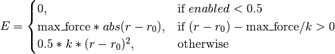
__init__(max_force)¶Initialise the force object and set the maximum force magnitude.
- Args:
- max_force:
maximum allowable force in
add_bonds(atom_indices, enableds, spring_constants, targets)¶Add a set of bonds to the simulation, using a fast C++ function. Fastest if all parameters are supplied as NumPy arrays.
- Args:
- atom_indices:
a 2-tuple of integer arrays giving the indices of the bonded atoms in the simulation construct
- enableds:
a Boolean array defining which restraints are to be active
- spring_constants:
a float array of spring constants in
- targets:
a float array of target distances in nanometers
- property
max_force¶Get/set the maximum force to be applied to any given atom, in
update_target(index, enabled=None, k=None, target=None)¶Update the parameters for an existing restraint in the simulation. Mostly superseded by
update_targets().
- Args:
- index:
the index of this restraint in the OpenMM force object
- enabled:
Boolean flag defining whether the restraint is to be enabled. None = keep current value.
- k:
The new spring constant (as a
simtk.Quantityor in units of). None = keep current value.
- target:
the new target distance (as a
simtk.Quantityor in nanometres). None = keep current value.
update_targets(indices, enableds, spring_constants, targets)¶Update a set of targets all at once using fast C++ code. Fastest if the arguments are provided as Numpy arrays, but any iterable will work.
- Args:
- indices:
the indices of the restraints in the OpenMM force object
- enableds:
a Boolean array defining which restraints are to be enabled
- spring_constants:
The new spring constants in units of
- targets:
the new target distances in nanometres


Position Restraints¶
- class
chimerax.isolde.openmm.custom_forces.TopOutRestraintForce(max_force)¶A
openmm.CustomExternalForcesubclass designed to restrain atoms to defined positions via a standard harmonic potential with a user-defined fixed maximum cutoff on the applied force. Used for position restraints as well as for imposing interactive tugging forces, this is designed for steering the simulation into new conformations where the starting positions may be far from the target positions, leading to catastrophically large forces with a standard harmonic potential. The effective energy equation is:
__init__(max_force)¶Initialise the force object and set the maximum force magnitude.
- Args:
- max_force:
maximum allowable force in
add_particles(indices, enableds, spring_constants, targets)¶Add a set of restraints to the simulation, using a fast C++ function. Fastest if all parameters are supplied as NumPy arrays.
- Args:
- atom_indices:
integer array giving the indices of the restrained atoms in the simulation construct
- enableds:
a Boolean array defining which restraints are to be active
- spring_constants:
a float array of spring constants in
- targets:
a (nx3) float array of (x,y,z) target positions in nanometres
- property
max_force¶Get/set the maximum force applied to any given atom, in .
release_restraint(index)¶Disable a single restraint.
- Args:
- index:
the index of the restraint to be disabled.
update_target(index, enabled=None, k=None, target=None)¶Update a single restraint. This function is mostly superseded by
update_targets().
- Args:
- index:
integer index of the restraint in the force object
- enabled:
enable/disable the restraint. None keeps the current value.
- k:
set the spring constant in
- target:
set the target (x,y,z) position in nanometres. None keeps the current value.
update_targets(indices, enableds, spring_constants, targets)¶Update a set of targets all at once using fast C++ code. Fastest if the arguments are provided as Numpy arrays, but any iterable should work.
- Args:
- indices:
the indices of the restraints in the OpenMM force object
- enableds:
a Boolean array defining which restraints are to be enabled
- spring_constants:
The new spring constants in units of
- targets:
A (nx3) float array providing the new target (x,y,z) positions in nanometres.

Dihedral Restraints¶
- class
chimerax.isolde.openmm.custom_forces.FlatBottomTorsionRestraintForce¶A
openmm.CustomTorsionForcesubclass designed to restrain torsion angles while allowing free movement within a range (target +/- cutoff). Within the cutoff range the potential is constant (that is, zero force is applied). The effective energy function is: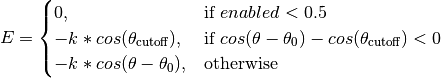
__init__()¶Initialise the force object. No restraints are added at this stage.
add_torsions(atom_indices, enableds, spring_constants, targets, cutoffs)¶Add a set of torsion restraints using a fast C++ function. Returns a NumPy integer array giving the indices of the restraints in the force object. Fastest if the inputs are NumPy arrays, but most iterables should work.
- Args:
- atom_indices:
A 4-tuple of arrays providing the indices of the dihedral atoms in the simulation construct
- enableds:
A Boolean array (or any array castable to float) where values > 0.5 represent enabled restraints
- spring_constants:
Restraint spring constants in
- targets:
Target angles in radians
- cutoffs:
Cutoff angle (below which no force is applied) for each restraint in radians.
update_target(index, enabled=None, k=None, target=None, cutoff=None)¶Update a single restraint. This function is mostly superseded by
update_targets().
- Args:
- index:
integer index of the restraint in the force object
- enabled:
enable/disable the restraint. None keeps the current value.
- k:
set the spring constant in
. None keeps the current value.
- target:
set the target angle in radians. None keeps the current value.
- cutoff:
set the cutoff angle in radians. None keeps the current value.
update_targets(indices, enableds, spring_constants, targets, cutoffs)¶Update a set of targets all at once using fast C++ code. Fastest if the arguments are provided as NumPy arrays, but any iterable should work.
- Args:
- indices:
the indices of the restraints in the OpenMM force object
- enableds:
a Boolean array defining which restraints are to be enabled
- spring_constants:
the new spring constants in units of
- targets:
the new target angles in radians
- cutoffs:
the new cutoff angles in radians
CMAP Correction terms¶
- class
chimerax.isolde.openmm.custom_forces.AmberCMAPForce¶CMAP-style corrections to AMBER 12/14 forcefields to give improved backbone conformations in implicit solvent. Ref: http://pubs.acs.org/doi/pdf/10.1021/acs.jctc.5b00662
__init__(self) → CMAPTorsionForce¶__init__(self, other) -> CMAPTorsionForce
Create a CMAPTorsionForce.
addTorsion(resname, phi_indices, psi_indices)¶Add a single phi/psi pair to the force.
- Args:
- resname:
the upper-case three-character name of the amino acid residue
- phi_indices:
a NumPy array of four ints giving the indices of the phi dihedral atoms in the simulation
- psi_indices:
a NumPy array of four ints giving the indices of the psi dihedral atoms in the simulation
add_torsions(resnames, phi_indices, psi_indices)¶Add a set of peptide backbone (phi, psi) pairs to the force.
- Args:
- resnames:
an iterable of upper-case three-letter residue names
- phi_indices:
a (nx4) NumPy integer array giving the indices of the atoms from each phi dihedral in the simulation
- psi_indices:
a (nx4) NumPy integer array giving the indices of the atoms from each psi dihedral in the simulation
Implicit Solvent¶
- class
chimerax.isolde.openmm.custom_forces.GBSAForce(solventDielectric=78.5, soluteDielectric=1, SA='ACE', cutoff=1.0, kappa=3.0, nonbonded_method=1)¶Wrapper around
openmm.GBSAGBn2Forcewhich implements the generalised Born GB-Neck2 implicit solvent implementation.
__init__(solventDielectric=78.5, soluteDielectric=1, SA='ACE', cutoff=1.0, kappa=3.0, nonbonded_method=1)¶Initialise the force object. Defaults are chosen to represent a salt concentration of approximately 0.5M at 100K, broadly representative of the conditions within typical protein crystals.
- Args:
- solventDielectric:
dielectric constant of solvent regions
- soluteDielectric:
dielectric constant “inside” the macromolecule
- SA:
string choosing the method for determining solvent-accessible surface
- cutoff:
cutoff distance in nanometres (must match the cutoff distance for the other nonbonded forces in the simulation!)
- kappa:
Determines the rate of falloff of the potential with distance. Effectively a proxy for salt concentration, where higher kappa corresponds to higher salt.
- nonbonded_method:
should be left as default in almost all cases.